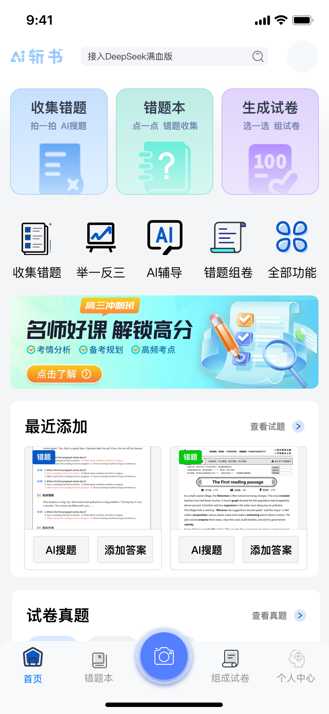
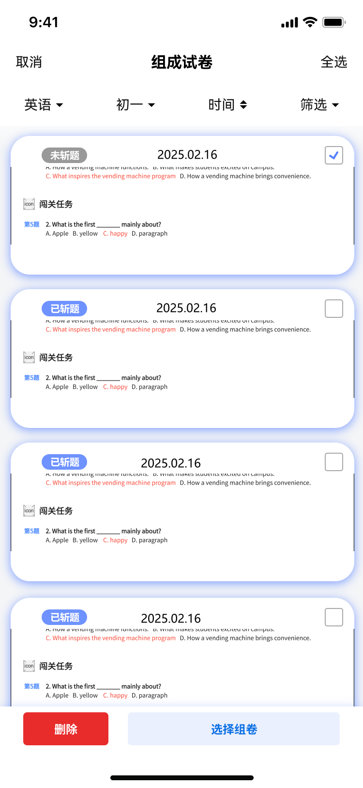
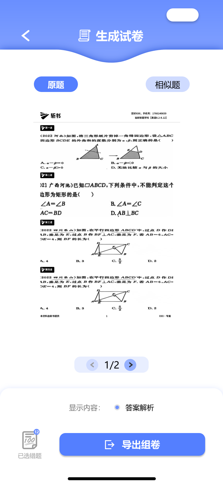

筛选错题组卷导出功能 PRD
AI斩书 · V1.0
1. 文档头信息
| 项 | 内容 |
|---|---|
| 文档名称 | AI斩书 - 筛选错题组卷导出功能 PRD |
| 版本号 | V1.0 |
| 最后更新 | （待填写） |
| 产品负责人 | （待填写） |
| UI 负责人 | （待填写） |
| 前端负责人 | （待填写） |
| 后端负责人 | （待填写） |
| 测试负责人 | （待填写） |
| 排期 | （待填写） |
| 文档状态 | 📝 初稿 |
2. 项目背景与目标
2.1 项目背景
产品现状
AI斩书是一款面向中小学生的AI智能错题管理应用，核心功能包括错题收集、错题本管理和试卷生成。用户可通过拍照或手动录入的方式收集错题，并利用AI技术进行错题分析和相似题推荐。
核心数据支撑
- 当前错题本功能用户平均累计错题 50-200道/人
- 错题复习率不足 35%，大部分错题收集后未被有效利用
- 用户手动整理一份针对性试卷平均耗时 45-90分钟
- 68% 的学生希望有更便捷的方式将错题转化为练习试卷
用户痛点
- 错题筛选低效 — 错题本中积累了大量错题，但缺乏有效的筛选手段，用户难以快速定位需要复习的题目
- 组卷流程繁琐 — 需要手动逐道选择题目，再进行排版整理，耗时耗力
- 导出体验不佳 — 现有组卷功能缺乏预览和灵活的导出选项，用户体验有待提升
竞品情况
| 竞品 | 筛选能力 | 组卷能力 | 导出能力 |
|---|---|---|---|
| 猿题库 | 基础筛选 | 支持 | PDF导出 |
| 作业帮 | 多维度筛选 | 支持 | PDF/图片 |
| 错题星球 | 基础筛选 | 支持 | PDF导出 |
| AI斩书（本产品） | 待增强 | 待优化 | 待优化 |
2.2 项目目标
核心目标
错题筛选组卷导出功能的用户使用率达到 40%（基于活跃用户数）
次要目标
- 筛选操作完成率 ≥ 85%
- 组卷导出成功率 ≥ 95%
- 用户组卷平均耗时下降至 10分钟以内（现有手动整理需45-90分钟）
- 错题复习率提升至 50%
非目标（不在本次迭代范围）
- 不修改错题收集（拍照/录入）功能
- 不新增知识点标签体系
- 不涉及AI智能组卷推荐（后续版本考虑）
- 不支持多人协作组卷
3. 用户故事与需求优先级
采用 MoSCoW 法则分级
Must have（必须做）
| 编号 | 用户故事 | 验收标准 |
|---|---|---|
| M1 | 作为学生，我希望能按科目筛选错题，以便针对性复习某一学科 | 支持选择单一科目或全部科目 |
| M2 | 作为学生，我希望能按年级筛选错题，以便找到对应学段的题目 | 支持小学、初中、高中各年级筛选 |
| M3 | 作为学生，我希望能按收集时间筛选错题，以便找到近期的错题 | 支持今日、本周、本月、全部 |
| M4 | 作为学生，我希望能勾选多道错题进行批量组卷 | 支持单选、多选、全选操作 |
| M5 | 作为学生，我希望能预览生成的试卷，确认题目内容 | 生成试卷前可预览，支持翻页 |
| M6 | 作为学生，我希望能导出试卷为PDF，方便打印练习 | 支持PDF格式导出 |
| M7 | 作为学生，我希望导出时可以选择是否显示答案解析 | 支持开启/关闭答案解析显示 |
Should have（应该做）
| 编号 | 用户故事 | 验收标准 |
|---|---|---|
| S1 | 作为学生，我希望能按掌握程度筛选错题，以便重点复习不懂的题目 | 支持"懂了"、"不懂"筛选 |
| S2 | 作为学生，我希望能按来源筛选错题，如举一反三题目 | 支持"举一反三"、"未标记"筛选 |
| S3 | 作为学生，我希望能删除不需要的错题，保持错题本整洁 | 支持单选删除和批量删除 |
| S4 | 作为学生，删除前希望有确认提示，避免误操作 | 弹出确认弹窗 |
| S5 | 作为学生，我希望在选择模式下能快速全选或取消全选 | 提供全选/取消全选按钮 |
Could have（可以做）
| 编号 | 用户故事 | 验收标准 |
|---|---|---|
| C1 | 作为学生，我希望导出时可以选择相似题替代原题 | 预览时支持切换"原题"/"相似题" |
| C2 | 作为学生，我希望查看试卷的页码信息 | 显示当前页/总页数 |
| C3 | 作为学生，我希望在首页能快速进入组卷功能 | 首页提供便捷入口 |
Won't have（不做）
- 批量修改题目标签
- 智能推荐组卷（AI根据薄弱点推荐）
- 多人协作组卷
- 自定义试卷模板
4. 整体业务流程
4.1 主流程
4.2 筛选子流程
4.3 组卷导出子流程
5. 详细功能说明
5.1 入口与导航
5.1.1 首页入口
- 位置 — 首页功能区"组成试卷"卡片
- 图标 — 显示"组成试卷"文字 + 相关图标
- 文案 — 副标题"组卷·AI推荐"
- 点击 — 跳转至"组成试卷"页面
5.1.2 底部导航入口
- 位置 — 底部导航栏第三个Tab
- 图标 — 组卷相关图标
- 文案 — "组成试卷"
- 点击 — 直接进入组成试卷页面
5.2 组成试卷页面（错题列表）
5.2.1 页面布局
| 区域 | 内容 | 说明 |
|---|---|---|
| 顶部导航栏 | 返回箭头、页面标题"组成试卷"、"管理"按钮 | - |
| 筛选条件栏 | 科目下拉、年级下拉、时间下拉、筛选按钮 | 快速筛选入口 |
| 错题列表 | 错题卡片列表 | 支持滚动加载 |
| 列表项 | 日期、状态标签、题目内容、操作按钮 | - |
5.2.2 筛选条件栏
- 科目下拉 — 默认显示"英语"，点击展开选择（单选）
- 年级下拉 — 默认显示"初一"，点击展开选择（单选）
- 时间下拉 — 默认显示"时间"，点击展开选择（单选）
- 筛选按钮 — 点击进入完整筛选页面
5.2.3 错题卡片
每张卡片包含以下信息：
- 状态标签 — "未斩题"（蓝色）/ "已斩题"（红色）
- 日期 — 如"2025.02.16"
- 题目类型 — 如"闯关任务"
- 题目内容 — 题目文字 + 选项
- 操作按钮 — 解析、辅导、相似题
5.2.4 空状态
- 当筛选结果为空时，显示空状态提示
- 文案："暂无符合条件的错题"
- 建议："试试调整筛选条件"
5.3 筛选页面
5.3.1 页面布局
| 区域 | 内容 | 说明 |
|---|---|---|
| 顶部导航栏 | 返回箭头、页面标题"筛选" | - |
| 科目区域 | 标题 + 选项网格 | 单选 |
| 来源区域 | 标题 + 选项网格 | 单选 |
| 掌握程度区域 | 标题 + 选项网格 | 单选 |
| 收集时间区域 | 标题 + 选项网格 | 单选 |
| 年级区域 | 标题 + 选项网格 | 单选 |
5.3.2 筛选维度详情
| 维度 | 选项 | 默认值 | 选择方式 |
|---|---|---|---|
| 科目 | 全部、语文、数学、英语、科学、物理、化学、生物、地理、历史、政治、其他 | 全部 | 单选 |
| 来源 | 全部、举一反三、未标记 | 全部 | 单选 |
| 掌握程度 | 全部、懂了、不懂 | 全部 | 单选 |
| 收集时间 | 全部、今日、本周、本月 | 全部 | 单选 |
| 年级 | 全部、一年级~高三、其他 | 全部 | 单选 |
5.3.3 交互说明
- 选中状态 — 背景色变为蓝色（#E8F4FD），文字变为蓝色
- 未选中状态 — 背景色为灰色（#F5F5F5），文字为黑色
- 点击选项后立即生效，无需确认按钮
- 点击左上角返回箭头返回列表，筛选条件保持
5.3.4 筛选逻辑
- 各维度之间为 AND 关系
- 同一维度内为 OR 关系（但本版本为单选）
- 筛选条件实时更新列表内容
5.4 选择模式
5.4.1 进入方式
在组成试卷页面点击右上角"管理"按钮进入
5.4.2 页面布局
| 区域 | 内容 | 说明 |
|---|---|---|
| 顶部导航栏 | "取消"按钮、页面标题、"全选"按钮 | - |
| 筛选条件栏 | 与组成试卷页面相同 | 支持筛选 |
| 错题列表 | 每项右侧增加复选框 | - |
| 底部操作栏 | "删除"按钮（红色）、"选择组卷"按钮（蓝色） | - |
5.4.3 复选框交互
- 位置 — 每道题右侧
- 未选中 — 灰色边框圆形
- 已选中 — 蓝色填充 + 白色对勾
- 点击 — 切换选中/未选中状态
5.4.4 全选功能
- 位置 — 右上角
- 默认文字 — "全选"
- 点击后 — 文字变为"取消全选"，所有题目被选中
- 再次点击 — 文字变为"全选"，所有题目取消选中
5.4.5 底部操作栏
删除按钮
- 未选中任何题目时：灰色，不可点击
- 选中题目后：红色，可点击
- 点击后弹出确认弹窗
选择组卷按钮
- 未选中任何题目时：灰色，不可点击
- 选中题目后：蓝色，可点击
- 点击后生成试卷
5.5 删除功能
5.5.1 删除确认弹窗
| 元素 | 内容 | 样式 |
|---|---|---|
| 标题 | "错题删除后不可恢复，确认是否删除？" | 黑色加粗 |
| 取消按钮 | "取消" | 蓝色文字，左侧 |
| 确认按钮 | "确认删除" | 红色文字，右侧 |
5.5.2 交互流程
- 用户点击"删除"按钮
- 弹出确认弹窗，背景变暗
- 点击"取消"：关闭弹窗，返回选择模式
- 点击"确认删除"：执行删除操作
- 删除成功后：刷新列表，退出选择模式
5.5.3 边界情况
- 删除所有错题后：显示空状态页面
- 删除过程中：显示加载动画，禁用操作
5.6 试卷预览页面
5.6.1 页面布局
| 区域 | 内容 | 说明 |
|---|---|---|
| 顶部导航栏 | 返回箭头、页面标题"生成试卷" | - |
| 切换按钮组 | "原题"、"相似题" | 切换显示内容 |
| 试卷预览区 | 试卷内容展示 | 支持上下滚动、翻页 |
| 页码指示器 | "1/2" + 左右箭头 | 显示当前页/总页数 |
| 底部信息栏 | "已选错题"图标、"显示内容：答案解析" | - |
| 导出按钮 | "导出组卷"按钮 | 蓝色主按钮 |
5.6.2 试卷内容展示
- 格式 — 模拟真实试卷排版
- 内容 — 题目序号、题目内容、选项、图片
- 品牌标识 — 试卷顶部显示"斩书"品牌信息
- 水印 — 可选显示用户信息水印
5.6.3 原题/相似题切换
- 原题 — 显示用户选择的原始错题
- 相似题 — AI生成的相似题目（难度相近、知识点相同）
- 切换交互 — 点击Tab切换，无加载动画
5.6.4 翻页功能
- 翻页按钮 — 左右箭头
- 页码显示 — "当前页/总页数"
- 边界处理 — 第一页时左箭头灰色不可点，最后一页时右箭头灰色不可点
5.7 导出功能
5.7.1 导出选项
- 显示答案解析 — 开关控制，默认开启
- 开启：试卷包含答案和解析
- 关闭：试卷仅包含题目
5.7.2 导出流程
- 用户点击"导出组卷"按钮
- 显示导出选项（答案解析开关）
- 用户确认导出
- 显示"生成中..."加载状态
- 生成完成后：显示成功提示，提供保存/分享选项
5.7.3 导出格式
- 格式 — PDF
- 保存位置 — 本地存储 + 系统分享
5.7.4 成功提示
- 提示文案 — "导出成功"
- 操作选项 — 查看文件、分享给好友、打印
6. 原型图与交互说明
6.1 首页入口

界面元素说明
-
① 组成试卷卡片位于首页功能区第三个位置，点击后跳转至组成试卷页面。
-
② 底部导航栏第三个Tab为"组成试卷"入口，用户可从任意页面快速进入组卷功能。
-
交互逻辑点击任一入口进入组成试卷页面，展示用户的错题列表。
6.2 组成试卷页面

界面元素说明
-
① 筛选条件栏包含科目下拉、年级下拉、时间下拉、筛选按钮。支持快速筛选和进入完整筛选页面。
-
② "管理"按钮点击后进入选择模式，可批量选择题目进行删除或组卷操作。
-
③ 错题卡片显示错题的日期、状态标签（未斩题/已斩题）、题目内容和操作按钮（解析、辅导、相似题）。
-
状态说明• 未斩题（蓝色标签）：用户尚未掌握的错题
• 已斩题（红色标签）：用户已完成学习的错题
6.3 筛选页面

界面元素说明
-
① 科目筛选支持选择全部或单一科目，包括语文、数学、英语、科学、物理、化学、生物、地理、历史、政治等。
-
② 来源筛选支持按题目来源筛选：全部、举一反三、未标记。
-
③ 掌握程度筛选支持按掌握程度筛选：全部、懂了、不懂。
-
④ 收集时间筛选支持按时间范围筛选：全部、今日、本周、本月。
-
⑤ 年级筛选支持按年级筛选：全部、一年级至高三、其他。
-
交互逻辑各筛选条件为单选模式，点击选项后立即生效，点击返回箭头回到列表页并保持筛选条件。
6.3 选择模式

界面元素说明
-
① "取消"按钮点击后退出选择模式，返回普通列表状态。
-
② "全选"按钮点击后选中所有题目，按钮文字变为"取消全选"。
-
③ 复选框每道题右侧显示复选框，点击可勾选/取消勾选。选中后显示蓝色对勾。
-
④ "删除"按钮红色按钮，选中题目后可点击，点击后弹出确认弹窗。
-
⑤ "选择组卷"按钮蓝色按钮，选中题目后可点击，点击后生成试卷。
-
按钮状态未选中题目时，删除和选择组卷按钮置灰不可点击；选中后变为可点击状态。
6.4 删除确认弹窗

界面元素说明
-
① 弹窗标题显示"错题删除后不可恢复，确认是否删除？"，提醒用户操作不可逆。
-
② "取消"按钮蓝色文字，点击后关闭弹窗，返回选择模式，保持勾选状态。
-
③ "确认删除"按钮红色文字，点击后执行删除操作，删除完成后刷新列表。
-
交互逻辑弹窗弹出时背景变暗，点击背景不会关闭弹窗，强制用户做出选择。
6.4 选择组卷
界面元素说明
-
① 已选题目状态被选中的题目右侧复选框显示蓝色对勾，背景可能有轻微高亮。
-
② "选择组卷"按钮蓝色主按钮，点击后系统根据选中的题目生成试卷预览。
-
交互逻辑点击"选择组卷"后，系统进行组卷处理并跳转至试卷预览页面。
6.5 试卷预览与导出

界面元素说明
-
① 原题/相似题切换顶部Tab切换，可选择显示原始错题或AI生成的相似题。
-
② 试卷预览区展示生成的试卷内容，包含品牌标识、题目、选项等。支持上下滚动。
-
③ 页码指示器显示当前页/总页数（如"1/2"），支持左右翻页。
-
④ 答案解析开关控制导出时是否显示答案解析，默认开启。
-
⑤ "导出组卷"按钮蓝色主按钮，点击后生成PDF文件并提供保存/分享选项。
-
交互逻辑预览页面支持原题/相似题切换，翻页浏览，确认无误后点击导出。
7. 视觉规范
7.1 颜色规范
| 用途 | 颜色值 |
|---|---|
| 主色调（品牌蓝） | #4A90E2 |
| 选中状态 | #E8F4FD（背景）/ #4A90E2（文字/边框） |
| 未选中状态 | #F5F5F5（背景）/ #333333（文字） |
| 删除按钮 | #FF4D4F |
| 确认删除文字 | #FF4D4F |
| 取消按钮文字 | #4A90E2 |
| 状态标签（未斩题） | #4A90E2（背景）/ #FFFFFF（文字） |
| 状态标签（已斩题） | #FF4D4F（背景）/ #FFFFFF（文字） |
| 禁用状态 | #CCCCCC |
7.2 字体规范
| 场景 | 字号 | 字重 | 颜色 |
|---|---|---|---|
| 页面标题 | 18px | Semi Bold | #333333 |
| 筛选维度标题 | 16px | Medium | #333333 |
| 筛选选项文字 | 14px | Regular | #333333 |
| 错题日期 | 14px | Regular | #666666 |
| 按钮文字 | 16px | Medium | #FFFFFF |
| Toast文字 | 14px | Regular | #FFFFFF |
7.3 间距规范
| 场景 | 间距 |
|---|---|
| 页面左右边距 | 16px |
| 卡片内边距 | 12px |
| 卡片间距 | 12px |
| 筛选区域间距 | 24px |
| 筛选项间距 | 8px |
7.4 圆角规范
| 元素 | 圆角 |
|---|---|
| 卡片 | 12px |
| 按钮 | 8px |
| 复选框 | 圆形 |
| 筛选选项 | 8px |
| 弹窗 | 16px |
8. 数据埋点需求
8.1 核心埋点事件
| 埋点ID | 事件名称 | 触发时机 | 上报参数 |
|---|---|---|---|
| enter_exam_page | 进入组成试卷页面 | 用户进入页面 | source: 首页/底部Tab |
| click_filter | 点击筛选按钮 | 用户点击筛选入口 | current_filters: 当前筛选条件 |
| select_subject | 选择科目 | 用户选择科目选项 | subject: 科目名称 |
| select_grade | 选择年级 | 用户选择年级选项 | grade: 年级名称 |
| select_time | 选择时间 | 用户选择时间选项 | time_range: 时间范围 |
| select_source | 选择来源 | 用户选择来源选项 | source_type: 来源类型 |
| select_mastery | 选择掌握程度 | 用户选择掌握程度 | mastery_level: 掌握程度 |
| filter_result | 筛选结果 | 筛选完成 | result_count: 结果数量, filters: 筛选条件 |
| enter_manage_mode | 进入管理模式 | 用户点击"管理"按钮 | question_count: 列表题目数量 |
| select_question | 选择题目 | 用户勾选/取消勾选题目 | question_id: 题目ID, is_selected: true/false |
| select_all | 全选/取消全选 | 用户点击全选按钮 | is_select_all: true/false, selected_count: 选中数量 |
| click_delete | 点击删除按钮 | 用户点击删除 | selected_count: 选中数量 |
| confirm_delete | 确认删除 | 用户点击确认删除 | selected_count: 选中数量 |
| cancel_delete | 取消删除 | 用户点击取消 | - |
| delete_success | 删除成功 | 删除操作完成 | deleted_count: 删除数量 |
| click_generate_paper | 点击选择组卷 | 用户点击组卷按钮 | selected_count: 选中数量 |
| paper_preview | 试卷预览 | 进入预览页面 | question_count: 题目数量, source_type: 原题/相似题 |
| switch_paper_type | 切换试卷类型 | 用户切换原题/相似题 | paper_type: original/similar |
| click_export | 点击导出组卷 | 用户点击导出按钮 | paper_type: 试卷类型 |
| export_with_answer | 导出设置 | 用户设置导出选项 | show_answer: true/false |
| export_success | 导出成功 | 导出完成 | file_size: 文件大小, question_count: 题目数量 |
8.2 埋点参数说明
| 参数名 | 类型 | 说明 |
|---|---|---|
| source | String | 来源渠道：home_page（首页）、bottom_tab（底部Tab） |
| current_filters | JSON | 当前所有筛选条件 |
| subject | String | 科目名称 |
| grade | String | 年级名称 |
| time_range | String | 时间范围：today/week/month/all |
| source_type | String | 来源类型：举一反三/unmarked |
| mastery_level | String | 掌握程度：懂了/不懂 |
| result_count | Number | 筛选结果数量 |
| question_id | String | 题目唯一标识 |
| is_selected | Boolean | 是否选中 |
| is_select_all | Boolean | 是否全选 |
| selected_count | Number | 选中题目数量 |
| deleted_count | Number | 删除题目数量 |
| paper_type | String | 试卷类型：original（原题）/similar（相似题） |
| show_answer | Boolean | 是否显示答案解析 |
| file_size | Number | 导出文件大小（KB） |
9. 非功能需求
9.1 性能要求
| 场景 | 指标要求 |
|---|---|
| 筛选结果加载 | ≤ 500ms |
| 试卷生成 | ≤ 3s（10道题以内） |
| PDF导出 | ≤ 5s（10道题以内） |
| 页面切换 | ≤ 300ms |
| 列表滚动 | 60fps，无卡顿 |
9.2 兼容性要求
| 平台 | 版本要求 |
|---|---|
| iOS | 12.0+ |
| Android | 6.0+ |
| 屏幕分辨率 | 720p ~ 2K |
9.3 安全性要求
- 删除操作需要用户二次确认
- 导出文件需包含用户水印（可选）
- 用户数据加密存储
9.4 稳定性要求
- 功能崩溃率 ≤ 0.01%
- 导出失败率 ≤ 1%
- 数据丢失率 = 0%
10. 验收标准
10.1 功能验收
筛选功能
- 首页点击"组成试卷"可正常进入页面
- 底部Tab点击可正常进入页面
- 筛选条件栏显示科目、年级、时间、筛选按钮
- 点击筛选按钮可进入筛选页面
- 筛选页面显示5个筛选维度：科目、来源、掌握程度、收集时间、年级
- 每个维度默认选中"全部"
- 选择筛选选项后，选项状态正确变化
- 返回列表后，筛选条件正确应用
- 筛选结果为空时，显示空状态提示
选择模式
- 点击"管理"按钮进入选择模式
- 进入选择模式后，显示复选框和底部操作栏
- 点击复选框可勾选/取消勾选题目
- 点击"全选"可选中所有题目
- 点击"取消全选"可取消所有选中
- 未选中题目时，"删除"和"选择组卷"按钮置灰
- 选中题目后，按钮变为可点击状态
- 点击"取消"可退出选择模式
删除功能
- 点击"删除"弹出确认弹窗
- 弹窗显示"错题删除后不可恢复，确认是否删除？"
- 点击"取消"关闭弹窗，返回选择模式
- 点击"确认删除"执行删除操作
- 删除成功后刷新列表
- 删除所有题目后显示空状态
组卷功能
- 点击"选择组卷"生成试卷
- 生成过程中显示加载状态
- 预览页面显示试卷内容
- 支持切换"原题"和"相似题"
- 支持翻页操作
- 页码显示正确
导出功能
- 点击"导出组卷"显示导出选项
- 可选择是否显示答案解析
- 确认导出后生成PDF
- 导出成功后显示成功提示
- 导出的PDF内容正确
10.2 性能验收
- 筛选结果加载时间 ≤ 500ms
- 试卷生成时间 ≤ 3s
- PDF导出时间 ≤ 5s
- 页面切换无卡顿
- 列表滚动流畅（60fps）
10.3 兼容性验收
- iOS 12.0+ 设备功能正常
- Android 6.0+ 设备功能正常
- 不同分辨率屏幕显示正常
11. 风险评估与应对
| 风险 | 概率 | 影响 | 应对方案 |
|---|---|---|---|
| 试卷生成性能问题 | 中 | 用户等待时间过长 | 优化生成算法，添加加载动画，设置超时提示 |
| PDF导出失败 | 低 | 用户无法保存试卷 | 增加重试机制，提供替代导出格式（如图片） |
| 筛选结果为空 | 高 | 用户体验差 | 显示空状态提示，引导用户调整筛选条件 |
| 相似题质量不高 | 中 | 用户满意度下降 | 优化AI模型，提供原题作为备选 |
| 大量题目导出内存溢出 | 低 | 应用崩溃 | 分批处理，限制单次导出数量 |
| 用户误删题目 | 中 | 数据丢失 | 二次确认机制，可考虑增加回收站功能 |
12. 上线计划
12.1 上线计划
| 阶段 | 时间 | 内容 |
|---|---|---|
| 开发阶段 | （待填写） | 前后端开发 |
| 测试阶段 | （待填写） | 功能测试、性能测试、兼容性测试 |
| 灰度阶段 | （待填写） | 灰度1% → 10% → 50%用户 |
| 全量上线 | （待填写） | 全量发布 |